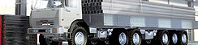

Важно
Доставка компании «Тримет» — это:
- Возможность «дистанционной» покупки металлопроката;
- Уверенность в том, что металлопрокат будет доставлен в нужное место и в нужное время;
- Фиксированная стоимость доставки: включено время погрузки, время в пути, а также время разгрузки металлопроката;
- Сохранность металлопроката в пути.
Наши награды

Лучшая металлобаза России 2011
Компания «Тримет» становится победителем конкурса «Лучшая металлобаза России 2011» в номинации «Лучшая металлобаза Урала»
Отдел продаж
Оформить заявку и получить информацию о наличии, стоимости металлопроката, условиях поставки, возможности докомплектации заявки и пр. можно у специалистов отдела продаж
Телефон: +7 (3452)
Факс: +7 (3452)
Доставка
Компания Тримет предлагает услуги по доставке металлопроката до объекта автомобильным транспортом «КАМАЗ» и «ГАЗель»
Индивидуальный подход к каждому клиенту позволяет компании «Тримет» понять потребность клиента, предложить оптимальный вариант доставки металлопроката и выполнить его на качественном уровне.
В пределах г. ТюмениДоставка металлопроката до объекта в пределах г. Тюмени осуществляется автомобилями «КАМАЗ» и «ГАЗель». |
Междугородние поставкиДля междугородних поставок металлопроката возможна доставка как автомобильным, так и железнодорожным и водным транспортом. |
Рассчитать стоимость доставки с учетом веса и размера приобретаемого металлопроката вы можете, используя on-line сервис
| Район доставки | «ГАЗель» до 6 м |
«КАМАЗ» (до 20 тн, до 12 м) |
||
|---|---|---|---|---|
| БКУ, Раб. посёлок, Зайкова | 600 руб. | 1 300 руб. | ||
| Лесобаза | 1 200 руб. | 2 400 руб. | ||
| Центр | 1 200 руб. | 3 000 руб. | ||
| п. Антипино | 1 200 руб. | 2 400 руб. | ||
| п. Боровский | 1 200 руб. | 3 000 руб. | ||
| МЖК — Восточный мкр. | 1 200 руб. | 3 000 руб. | ||
| Червишевский тракт | 1 200 руб. | 3 000 руб. | ||
| Московский тракт | 1 200 руб. | 3 000 руб. | ||
| Дом обороны | 1 200 руб. | 3 300 руб. | ||
| Бабарынка | 1 200 руб. | 3 300 руб. | ||
| Заречные мкр. | 1 200 руб. | 3 300 руб. | ||
| п. Мелиораторов | 1 200 руб. | 3 300 руб. | ||
| п. Мыс | 1 200 руб. | 3 300 руб. | ||
| «КАМАЗ» | ||||
| Город | км | 20 т | 23 т | 25 т |
| Аша | 800 | 44 600 руб. | 53 000 руб. | 58 500 руб. |
| В.Салда | 550 | 30 700 руб. | 36 400 руб. | 40 200 руб. |
| Екатеринбург | 350 | 19 500 руб. | 23 200 руб. | 25 600 руб. |
| Заводоуковск | 100 | 7 900 руб. | 9 300 руб. | 10 300 руб. |
| Ишим | 320 | 17 800 руб. | 21 200 руб. | 23 400 руб. |
| Курган | 220 | 12 300 руб. | 14 600 руб. | 16 100 руб. |
| Нефтеюганск | 750 | 41 800 руб. | 49 700 руб. | 54 900 руб. |
| Нижневартовск | 1050 | 58 500 руб. | 69 500 руб. | 76 800 руб. |
| Н.Тавда | 80 | 7 400 руб. | 8 700 руб. | 9 700 руб. |
| Н.Серьги | 450 | 25 100 руб. | 29 800 руб. | 32 900 руб. |
| Н.Тагил | 500 | 27 900 руб. | 33 100 руб. | 36 600 руб. |
| Новосибирск | 1300 | 72 500 руб. | 86 100 руб. | 95 100 руб. |
| Новый-Уренгой | 1650 | 92 000 руб. | 109 200 руб. | 120 700 руб. |
| Омск | 650 | 36 200 руб. | 43 000 руб. | 47 600 руб. |
| Первоуральск | 400 | 22 300 руб. | 26 500 руб. | 29 300 руб. |
| Полевской | 400 | 22 300 руб. | 26 500 руб. | 29 300 руб. |
| Пыть-Ях | 700 | 39 000 руб. | 46 300 руб. | 51 200 руб. |
| Сургут | 800 | 44 600 руб. | 53 000 руб. | 58 500 руб. |
| Тавда | 150 | 8 400 руб. | 9 900 руб. | 11 000 руб. |
| Тобольск | 250 | 13 900 руб. | 16 600 руб. | 18 300 руб. |
| Уват | 400 | 22 300 руб. | 26 500 руб. | 29 300 руб. |
| Ханты-Мансийск | 950 | 53 000 руб. | 62 900 руб. | 69 500 руб. |
| Челябинск | 500 | 27 900 руб. | 33 100 руб. | 36 600 руб. |
| Шадринск | 220 | 12 300 руб. | 14 600 руб. | 16 100 руб. |
| Ялуторовск | 75 | 6 800 руб. | 8 100 руб. | 8 900 руб. |
В стоимость доставки включено время погрузки, доставки и разгрузки машины.
Выдача груза производится при наличии у грузополучателя доверенности на получение металлопроката.
Установлены следующие лимиты времени на разгрузку: КАМАЗ — 1 час, ГАЗель — 30 мин.
Стоимость дополнительного времени: КАМАЗ — 1 300 руб/час, ГАЗель — 300 руб за каждые 30 мин.
Компания «Тримет» предлагает новую услугу
Междугородняя доставка металлопроката от 1 тн
- Ответственность за доставку несет компания «Тримет»;
- Стоимость доставки соответствует перевозимому объему металлопроката (вы не переплачиваете за полную машину);
- Возможность работы со всем ассортиментом металлопроката компании «Тримет» , независимо от того, где расположен объект;
- Возможность использовать все услуги по обработке металлопроката компании «Тримет», независимо от того, где расположен объект;
- Доставка металлопроката до объекта в минимальный срок;
- Общая стоимость металлопроката и его доставки выгодно отличается от цен региональных (местных) поставщиков на аналогичную продукцию.
В настоящее время услуга доступна для городов Тобольск и Новый Уренгой.
«Тримет» расширяет географию поставок: вы можете оставить заявку на открытие данной услуги в вашем городе.
Дополнительную информацию о стоимости услуг можно получить по тел. +7 (3452) 520-670.